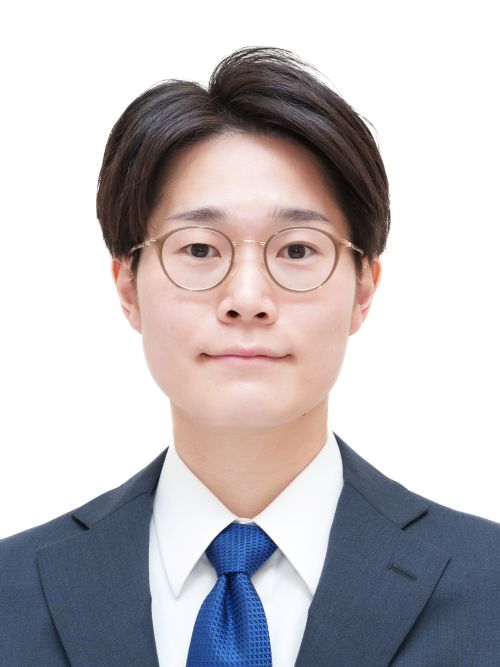

出垣 大貴（でがき ひろき）

京都大学 大学院工学研究科
高分子化学専攻
日本学術振興会特別研究員PD
（高分子物性講座 基礎物理化学分野）
経歴
- 2025年（令和7年）12月 日本学術振興会特別研究員PD
- 2024年（令和6年）4月 フランス ESPCI Paris 客員研究員（2024年7月まで）
- 2023年（令和5年）4月 日本学術振興会特別研究員DC1（2025年11月まで）
- 2022年（令和4年）9月 国立研究開発法人海洋研究開発機構 生命理工学センター 研究生（2024年3月まで）
- 2021年（令和3年）12月 国立研究開発法人科学技術振興機構 CREST「分解・劣化・安定化の精密材料科学」 リサーチアシスタント（RA）（2023年3月まで）
学歴
- 2025年（令和7年）11月 京都大学大学院工学研究科高分子化学専攻博士後期課程 短縮修了
- 2023年（令和5年）3月 京都大学大学院工学研究科高分子化学専攻修士課程 修了
- 2021年（令和3年）3月 京都大学工学部工業化学科 卒業
- 2017年（平成29年）3月 滋賀県立膳所高等学校 卒業
学位
-
2025年（令和7年）11月
京都大学 博士（工学）
「ブロック共重合体の圧力誘起相転移に関する理論的研究」
"Theoretical Study on Pressure-Induced Phase Transition in Block Copolymers" （指導教員：古賀毅教授）
受賞
- 2023年（令和5年）7月 令和５年度京都大学大学院工学研究科馬詰研究奨励賞
- 2023年（令和5年）7月 IPC2023 Young Scientist Poster Award
- 2023年（令和5年）7月 第69回高分子研究発表会（神戸）エクセレントポスター賞
- 2021年（令和3年）3月 令和４年度高分子化学専攻修士論文優秀発表賞
専門分野
高分子物理化学、高分子材料化学、ソフトマター物理学所属学会
高分子学会研究課題（競争的研究資金）
-
日本学術振興会 科学研究費助成事業 特別研究員奨励費（代表） 2023年4月–2026年3月、3,000,000円（総額）
-
2024年4月–7月、1,000,000円（総額）